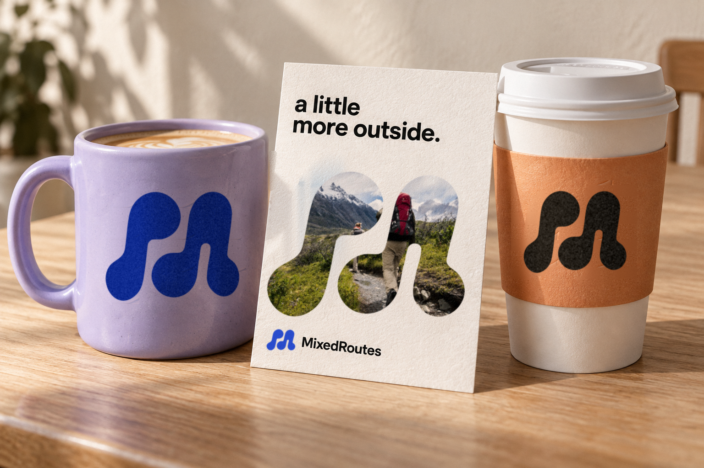

01 / The first route
It starts with one idea.
The left stroke rises, turns and heads somewhere. It is someone saying “we should go” and meaning it: the first move that gets a plan off the ground.
Option A / Concept 1 of 3
Winding paths echo MixedRoutes bringing different people together through shared plans.
01 / The mark
The same four backgrounds for every concept, so the marks can be compared side by side.
02 / The thinking behind A
Everyone arrives at a plan differently. One person finds the show, another knows the venue, a third just wants to come along. The mark draws that as two paths that set off on their own and fall into the same step.
The left stroke rises, turns and heads somewhere. It is someone saying “we should go” and meaning it: the first move that gets a plan off the ground.
The right stroke answers with the same curve, a beat later, on its own line. A plan only becomes real when a second person picks it up.
Each path finishes in a full, round stop, like a pin dropped on a map. Those are the destinations: the corner table, the trailhead, the front row.
Apart, the strokes are just lines. Together they swing in time and read as an M. That is what MixedRoutes does: it takes people moving at different speeds and gives them a shared beat.
The strokes never sit still. Even at 16 pixels the mark reads as motion, which suits an app about getting out of the house.
Both routes share the same weight and the same curve. That repetition makes the mark easy to remember and hard to mistake for a generic M.
03 / At every size
A logo earns its keep at the small end. These are the sizes it lives at in the app and the browser.
04 / In use
Three everyday touchpoints with identical content across concepts. Only the mark changes.
 Live music · Friday
Live music · FridayJazz at the Blue Room starts at 8. Maya and 2 friends are going.
Social media for real life
Find something to do, bring your people, and spend more time together.
05 / Out in the world
The same scene for every concept. Generated mockup with the mark composited in.

One color on a curved, glazed surface.
Ink on kraft, read at a glance across the counter.
The mark becomes a window into the experience.